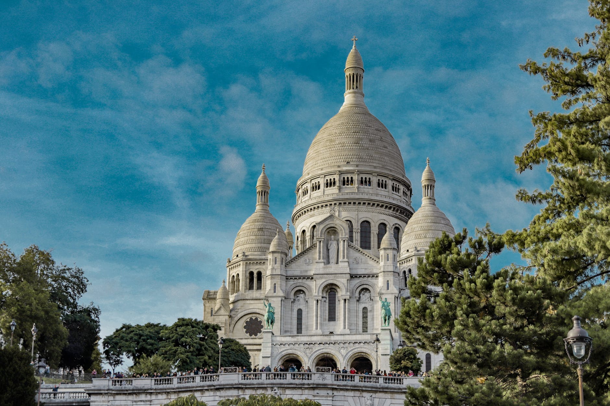

Common Class Project
Travel
Let's explore!
Feeling the itch to explore? Let's turn that travel dream into reality! Our page is packed with inspiration for every kind of adventurer, from mountain climbers to beach bums. We'll share unique destinations, insider tips, and budget-friendly ideas to get you started.
Want to soak up culture? We've got you covered. Craving delicious food? We know just the spot. So grab your backpack, book your ticket, and get ready to create memories that last a lifetime!
Pick a place

Montmartre, Paris
Geographical Location: Europe
Montmartre is a large hill in Paris's northern 18th arrondissement. It is 130 m high and gives its name to the surrounding district, part of the Right Bank. Montmartre is primarily known for its artistic history, for the white-domed Basilica of the Sacré-Cœur on its summit, and as a nightclub district.
Montmartre is talked about by Parisians the way New Yorkers talk about the Village: It's not what it used to be, It's like Disneyland, the artists can't afford to live here anymore, too many tourists etc. There is some truth to these opinions, but there are two ways of approaching this incredibly unique village within the metropolis. The first is to follow the herd instinct and stampede your way up the famous hill, take a picture of yourself on the steps of the basilica, buy an overpriced crepe at the Place du Tertre, get conned into having your portrait sketched, and walk back down clutching newly bought key-rings, postcards, gaudy T-shirts feeling a little mystified about what all the fuss is about.
Rio, Brazil

Geographical Location: South America
Rio de Janeiro is a huge seaside city in Brazil, famed for its Copacabana and Ipanema beaches, 38m Christ the Redeemer statue atop Mount Corcovado and for Sugarloaf Mountain, a granite peak with cable cars to its summit. The city is also known for its sprawling favelas (shanty towns). Its raucous Carnaval festival, featuring parade floats, flamboyant costumes and samba dancers, is considered the world’s largest.
Rio de Janeiro is home to some of the world’s friendliest people and most beautiful beaches. Brazil’s interracial history of Portuguese, Japanese, Indian, and German settlers has created a multicultural society, which has led to festivals and celebrations that are known all over the world. A city break in Rio de Janeiro presents a colorful cityscape of green mountains overlooking blue seas and long, sandy beaches. Expansive hotels and resorts line the seafronts of Ipanema and Copacabana, where sunny days drift into balmy evenings filled with street parties and loud music. From seeing the stunning Christ the Redeemer statue atop Mount Corcovado to learning to samba, check out our guide of things to do in Rio de Janeiro.
Rome, Italy
Geographical Location: Europe
Rome is the capital city of Italy. It is also the capital of the Lazio region, the centre of the Metropolitan City of Rome Capital, and a special comune named Comune di Roma Capitale.
For well over a millennium, Rome controlled the destiny of all civilization known to Europe, but then it fell into dissolution and disrepair. Physically mutilated, economically paralyzed, politically senile, and militarily impotent by the late Middle Ages, Rome nevertheless remained a world power—as an idea. The force of Rome the lawgiver, teacher, and builder continued to radiate throughout Europe. Although the situation of the popes from the 6th to the 15th century was often precarious, Rome knew glory as the fountainhead of Christianity and eventually won back its power and wealth and reestablished itself as a place of beauty, a source of learning, and a capital of the arts.